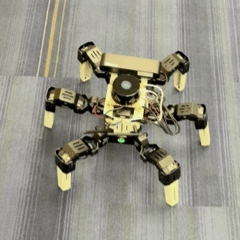
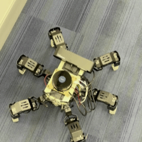
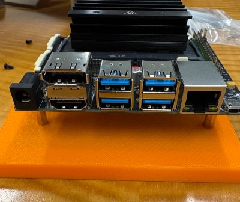

Blog
Main Guide Being Used Currently: Muto-RS Robot Repository
The library used for controlling the robot with Python is also available there.
The first four weeks of this project were aimed at putting the rest of the robot together, installing the operating system, and getting it to move. To install the operating system, NVIDIA SDK had to be installed on a laptop with Ubuntu 18.04.6 LTS to connect with the Jetson Nano Board. From there, the program downloaded what was needed and flashed it to the Jetson Nano. Currently, the Jetson Nano is running Jetpack 4.6.1, which is based on Ubuntu 18. Alongside that, we are currently using Python 3.6.9 to run the programs that control the robot.
9/22/2025: Connection between the robot and Jetson Nano was confirmed as the robot was able to take steps and use its buzzer via the MutoLib library.
Program Files: control.py
9/23/2025: A way for a Python script to detect which USB port is in use by the robot to connect has been confirmed to be functional. Also, a way to have continuous control of the robot without use of the terminal to type a direction using the PyGame library for constant input detection was created, although it is yet to be tested.
9/24/2025: The script to allow for continuous control of the robot without needing to press the enter key to register an input or specify time to move has been completed.
The ability to adjust the direction the robot is facing and to modify its speed have also been added.
Program Files: controlInteractive.py
9/25/2025: Controller support has been added. Also, the buzzer can be used while moving now. Alongside this, it is also possible to modify step length with a controller or keyboard now.
Program Files: controlInteractive2.py

10/13/2025: Since the last update, quite a bit of progress has been made. Python 3.7 has been confirmed to work with MutoLib while also supporting the latest version of OpenCV.
OpenCV has been used to enable the Jetson Nano to send images via the Socket and Pillow libraries to a server on another device, while also using it for recognition of balls of different colors.
Using that, the robot was able to react to the location a green in its view. It can adjust itself to have the ball in the center of its field of view and move forward when it is centered, which could allow it to follow someone potentially.
Program Files: ballServerV2.py, ballClient.py
The ballServer.py file is ran on an external device like a laptop or Raspberry Pi. The client is for the Jetson Nano on the robot.
10/15/2025: The robot is now able to detect faces while detecting the green ball to move.
If a face is in view long enough, a picture will be taken. Also, the issue with the PyGame control window going out of focus when in use with the controller program has been fixed.
If the window is out of focus, the program will redraw it to keep it in focus.
Program Files: controlInteractive3.py, controlPlusFace.py
10/22/2025: The robot is now able to wave, dance, and do a peacock spider wave.
The file named test2.py was used to experiment with MutoLib's servo methods and its comments have details on how to use it with the Hexapod.
The controlInteractive4.py file incorporates the emotes into the controls of the robot. Only two are currently supported on controller though until it gets revamped.
Program Files: controlInteractive4.py, test2.py

10/23/2025: The controls have been revamped from last time for both the controller. Also, the ball and face programs that were combined can now have the robot wave upon seeing a face for long enough.
Additionally, a new program has been made to test combining the functionality of controller support and camera recognition into one program.
Program Files: controlInteractive5.py,
controlPlusFaceWave.py, controlIntPlusCam.py
10/27/2025: The second Jetson Nano Development Kit that came with the robot had its OS installed.
11/4/2025: A board to support the second Jetson Nano on the table has been made, and it has been installed onto it.

11/5/2025: A game of snake from a previous project that was made using PyGame has been integrated into a small control program, enabling interactivity while the robot moves.
This is intended for demonstration purposes for audience engagement.
Program Files: pygameSnakeForMuto.py
12/4/2025: My term project for the course involved edge computing through the Jetson Nano on the robot as a client that sends photos, a Raspberry Pi as a server to transfer commands, photos, and save debug photos, and the other Jetson Nano for processing images to determine movement commands.
This system takes advantage of TLS/SSL for encryption, although it must be noted that it is not validated with a Certificate Authority because it is self-signed. Compression of images is also used to significantly speed up the transfer of images between the devices.
For testing, client.py is a program that is identical to mutoClient.py, except for actions that utilize MutoLib, so it can work across most computers without MutoLib.
However, this iteration of the project has an issue where it crashes after running for a little while, which seems to be caused by a desynchronization of some sort in communicaton. This will be fixed soon despite the project already having been presented.
Program Files: client.py, mutoClient.py, projectServer.py, jetsonClient.py
Photo Gallery